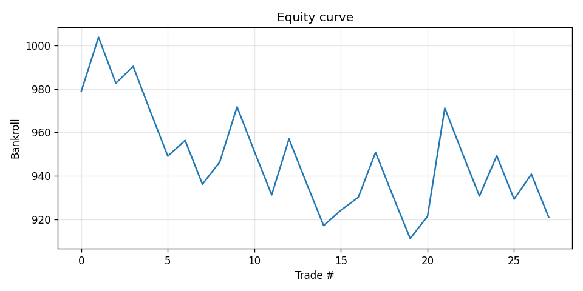
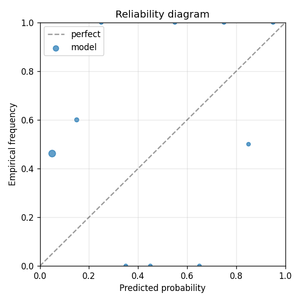

League One and Two: £10k-£50k matched volume per match, almost entirely recreational counterparty (accumulators, parlays). Information edge: local club news, loan moves, weather on lower-tier pitches, referee tendencies, fixture congestion. V1 of this market uses Football-Data.co.uk for results + closing odds + rolling form. V2 will layer Sofascore text for injury/lineup signals once that adapter ships.
| metric | value |
|---|---|
| brier_model | 0.40520264434283054 |
| brier_market | 0.2451664420506288 |
| brier_improvement | -0.16003620229220175 |
| accuracy_model | 0.5357142857142857 |
| accuracy_market | 0.4642857142857143 |
| n_events | 28 |
| n_trades | 28 |
| hit_rate | 0.4642857142857143 |
| gross_return | -0.0790915070364353 |
| net_return | -0.0790915070364353 |
| sharpe | -0.7179599387812452 |
| max_drawdown | -0.09237733075631725 |
| label_shuffle_brier_improvement | null |

